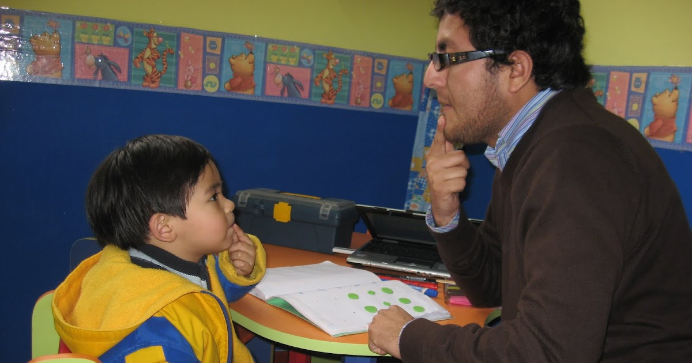

¿Preocupado por el lenguaje de tu hijo? Detecta y apoya su desarrollo al instante con nuestra App.
ComunicaKids: El apoyo profesional que tu hijo necesita, en la palma de tu mano. Acceso fácil, continuidad garantizada.

ComunicaKids: El apoyo profesional que tu hijo necesita, en la palma de tu mano. Acceso fácil, continuidad garantizada.
Muchos padres no saben identificar retrasos, y las evaluaciones profesionales son costosas y de difícil acceso.
El tratamiento profesional requiere sesiones frecuentes que no todas las familias pueden costear de forma continua, perdiendo el progreso.
Sin tareas para casa o guía clara, los padres no saben cómo reforzar el trabajo en consulta, reduciendo la efectividad.
En zonas rurales o alejadas, la falta de terapeutas limita gravemente el acceso a evaluación y seguimiento profesional.
Realiza un test interactivo adaptado por edad, impulsado por IA y basado en pruebas validadas, directamente en nuestra app. Identifica posibles dificultades a tiempo desde la comodidad de tu hogar.
Desde la app, contacta y agenda sesiones con terapeutas acreditados. Accede a profesionales especializados de forma sencilla y segura.
Accede a cientos de actividades lúdicas personalizadas en la app, asignadas por tu terapeuta. Mantén el avance de tu hijo entre sesiones y empodera a tu familia.
Monitorea el progreso de tu hijo en tiempo real a través de la aplicación con reportes claros y personalizados, para que veas su crecimiento.
Una solución asequible y al alcance de todos, diseñada para eliminar barreras económicas y geográficas.
Nuestras actividades y seguimiento evitan el retroceso, garantizando que el progreso de tu hijo sea constante.
Diseñada con el apoyo de fonoaudiólogos y especialistas, y basada en metodologías validadas.
Te brindamos las herramientas para que seas parte activa del desarrollo de tu hijo, con guías y apoyo.
"ComunicaKids ha sido un antes y un después para mi hijo. La detección temprana y las actividades en casa han hecho una gran diferencia."
- María P., Madre de Juan (5 años)"Me preocupaba el costo de las terapias, pero con ComunicaKids puedo mantener a mi hija practicando y viendo avances a un costo que sí puedo manejar."
- Carlos R., Padre de Sofía (4 años)Únete a nuestra creciente red de profesionales y conecta con familias que necesitan tu experiencia. Ofrece tus servicios, asigna actividades y gestiona el progreso de tus pacientes de forma eficiente a través de nuestra plataforma.
Conoce más y AfíliateNo, ComunicaKids es una herramienta complementaria. Busca facilitar la detección temprana, la conexión con profesionales y la continuidad del trabajo entre sesiones.
Nuestra aplicación está diseñada para niños desde los 2 hasta los 8 años, adaptando las evaluaciones y actividades a cada rango de edad.
Todos los terapeutas en nuestra plataforma pasan por un riguroso proceso de verificación de credenciales y experiencia profesional.
ComunicaKids ofrece una evaluación inicial gratuita. Luego, hay un modelo de suscripción accesible para acceder a actividades personalizadas y soporte, y las citas con terapeutas tienen un costo adicional transparente.
Descarga ComunicaKids hoy y comienza su camino hacia una comunicación más fluida y feliz.